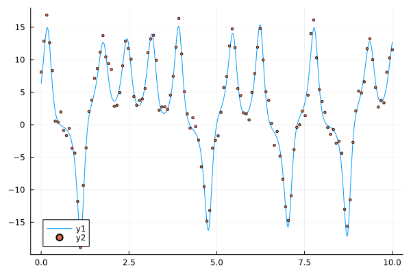
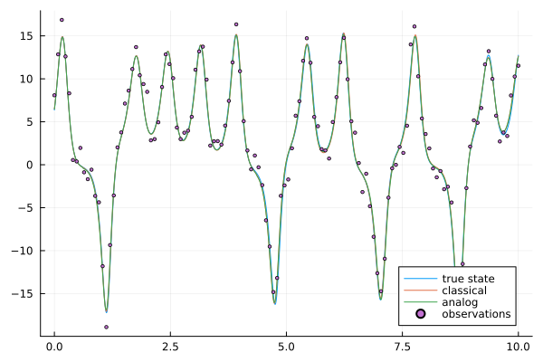

Lorenz 63
Data assimilation are numerical methods used in geosciences to mix the information of observations (noted as $y$) and a dynamical model (noted as f) in order to estimate the true/hidden state of the system (noted as x) at every time step k. Usually, they are related following a nonlinear state-space model:
\[\begin{aligned} x_k & = f(x_{k-1}) + \eta_k \\ y_k & = H x_k + \epsilon_k \end{aligned}\]
with $\eta$ and $\epsilon$ some independant white Gaussian noises respectively respresenting the model forecast error and the error of observation.
In classical data assimilation, we require multiple runs of an explicit dynamical model $f$ with possible severe limitations including the computational cost, the lack of consistency of the model with respect to the observed data as well as modeling uncertainties. Here, an alternative strategy is explored by developing a fully data-driven assimilation. No explicit knowledge of the dynamical model is required. Only a representative catalog of trajectories of the system is assumed to be available. Based on this catalog, the Analog Data Assimilation (AnDA) is introduced by combining machine learning with the analog method (or nearest neighbor search) and stochastic assimilation techniques including Ensemble Kalman Filter and Smoother (AnEnKF, AnEnKS) and Particle Filter (AnPF). We test the accuracy of the technic on different chaotic dynamical models, the Lorenz-63 and Lorenz-96 systems. # # This Julia program is derived from the Python library is attached to the following publication: # Lguensat, R., Tandeo, P., Ailliot, P., Pulido, M., & Fablet, R. (2017). The Analog Data Assimilation. Monthly Weather Review, 145(10), 4093-4107. # If you use this library, please do not forget to cite this work.
using Plots, OrdinaryDiffEq, AnalogDataAssimilation
using SciMLBase: ODEProblem, solveTo begin, as dynamical model $f$, we use the Lorenz-63 chaotic system. First, we generate simulated trajectories from this dynamical model and store them into the catalog. Then, we use this catalog to emulate the dynamical model and we apply the analog data assimilation. Finally, we compare the results of this data-driven approach to the classical data assimilation (using the true Lorenz-63 equations as dynamical model.
Generate simulated data
σ = 10.0
ρ = 28.0
β = 8.0 / 3
dt_integration = 0.01
dt_states = 1
dt_obs = 8
parameters = [σ, ρ, β]
var_obs = [1]
nb_loop_train = 100
nb_loop_test = 10
sigma2_catalog = 0.0
sigma2_obs = 2.0
ssm = StateSpaceModel(
lorenz63,
dt_integration,
dt_states,
dt_obs,
parameters,
var_obs,
nb_loop_train,
nb_loop_test,
sigma2_catalog,
sigma2_obs,
)StateSpaceModel(AnalogDataAssimilation.lorenz63, 0.01, 1, 8, [10.0, 28.0, 2.6666666666666665], [1], 100, 10, 0.0, 2.0)- compute $u_0$ to be in the attractor space
u0 = [8.0; 0.0; 30.0]
tspan = (0.0, 5.0)
prob = ODEProblem(ssm.model, u0, tspan, parameters)
u0 = last(solve(prob, save_everystep = false).u)
xt, yo, catalog = generate_data(ssm, u0);
plot(xt.t, vcat(xt.u'...)[:, 1])
scatter!(yo.t, vcat(yo.u'...)[:, 1]; markersize = 2)
Classical data assimilation
regression = :local_linear
sampling = :gaussian
k, np = 100, 500
DA = DataAssimilation(ssm, xt)
x̂_classical = forecast(DA, yo, AnEnKS(np), progress = false)
@time RMSE(xt, x̂_classical)0.5469175022696896Analog data assimilation
f = AnalogForecasting(k, xt, catalog; regression = regression, sampling = sampling)
DA = DataAssimilation(f, xt, ssm.sigma2_obs)
@time x̂_analog = forecast(DA, yo, AnEnKS(np), progress = false)
println(RMSE(xt, x̂_analog)) 22.755294 seconds (344.46 M allocations: 18.609 GiB, 15.70% gc time)
0.5363644420832162Comparison between classical and analog data assimilation
plot(xt.t, xt[1], label = "true state")
plot!(xt.t, x̂_classical[1], label = "classical")
plot!(xt.t, x̂_analog[1], label = "analog")
scatter!(yo.t, yo[1]; markersize = 2, label = "observations")
The results show that performances of the data-driven analog data assimilation are closed to those of the model-driven data assimilation. The error can be reduced by augmenting the size of the catalog "nblooptrain".
Remark
Note that for all the previous experiments, we use the robust Ensemble Kalman Smoother (EnKS) with the increment or local linear regressions and the Gaussian sampling. If you want to have realistic state estimations, we preconize the use of the Particle Filter PF with the locally constant regression (regression = :locally_constant) and the multinomial sampler (sampling = :multinomial) with a large number of particles np. For more details about the different options, see the attached publication: Lguensat, R., Tandeo, P., Ailliot, P., Pulido, M., & Fablet, R. (2017). The Analog Data Assimilation. Monthly Weather Review, 145(10), 4093-4107.
This page was generated using Literate.jl.